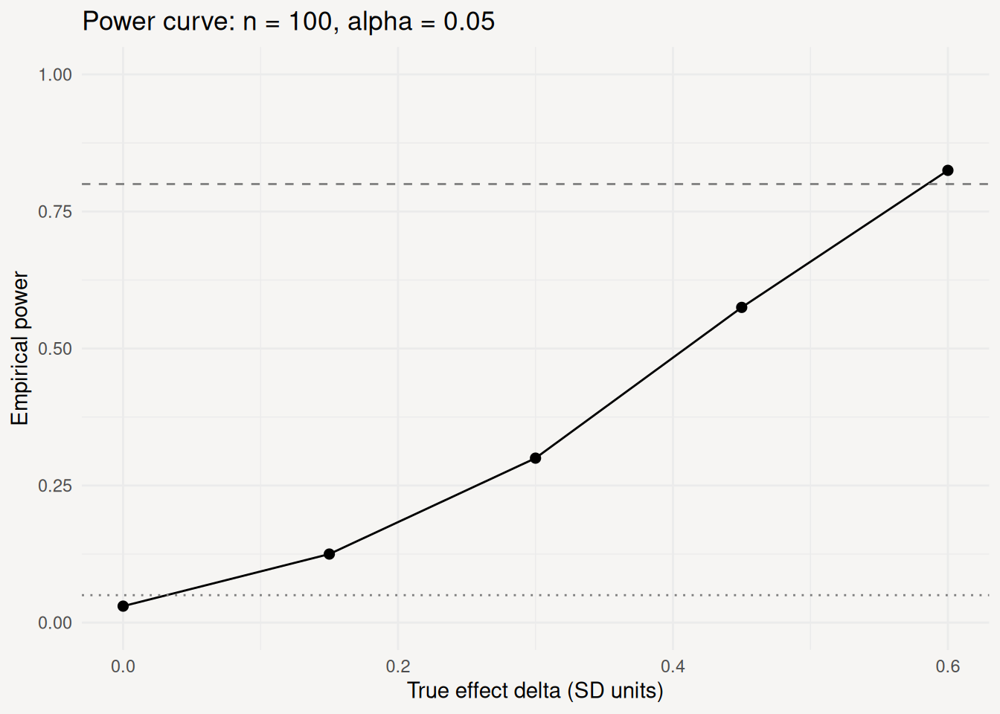

library(rxsim)
library(ggplot2)Example 1: Two arm | Fixed design | Continuous
two-arm
fixed design
continuous
t-test
Generator API,
enroll_trigger, and single final t-test — the minimal complete rxsim workflow.
This example simulates a parallel-group trial evaluating a new treatment against placebo on a continuous primary endpoint (e.g., a biomarker score). 100 subjects are randomised 1:1; a two-sample t-test is run at full enrollment. This is the simplest complete rxsim workflow using the generator API (replicate_trial). For a side-by-side comparison see Two API Styles.
Unique focus: generator API, enroll_trigger, single final analysis.
Scenario
sample_size <- 100
arms <- c("pbo", "trt")
allocation <- c(1, 1)
delta <- 0.57 # true effect (SD units)
enrollment_fn <- function(n) c(1, rep(0, n - 1)) # all enroll at t = 1 (single look)
dropout_fn <- function(n) rep(0, n) # no dropout
scenario <- tidyr::expand_grid(
sample_size = sample_size,
allocation = list(allocation),
delta = delta
)tidyr::expand_grid() embeds design parameters into every result row, making results self-documenting across parameter sweeps.
Populations
population_generators <- list(
pbo = function(n) data.frame(id = 1:n, value = rnorm(n), readout_time = 1),
trt = function(n) data.frame(id = 1:n, value = rnorm(n, delta), readout_time = 1)
)readout_time = 1 means the endpoint is observed 1 time unit after enrollment. The treatment arm has a mean shift of delta SD units over placebo.
Conditions
enroll_trigger(1.0, sample_size) fires once all 100 subjects are enrolled. subset(!is.na(enroll_time)) removes subjects allocated but not yet arrived.
analysis_generators <- list(
final = list(
trigger = enroll_trigger(1.0, sample_size),
analysis = function(df, current_time) {
enrolled <- subset(df, !is.na(enroll_time))
tt <- t.test(value ~ arm, data = enrolled)
data.frame(
scenario,
n_total = nrow(enrolled),
mean_pbo = mean(enrolled$value[enrolled$arm == "pbo"]),
mean_trt = mean(enrolled$value[enrolled$arm == "trt"]),
p_value = unname(tt$p.value)
)
}
)
)Simulate
set.seed(1)
trials <- replicate_trial(
trial_name = "example_1",
sample_size = sample_size,
arms = arms,
allocation = allocation,
enrollment = enrollment_fn,
dropout = dropout_fn,
analysis_generators = analysis_generators,
population_generators = population_generators,
n = 5
)run_trials(trials)replicate_results <- collect_results(trials)
replicate_results
#> replicate timepoint analysis sample_size allocation delta n_total
#> 1 1 1 final 100 1, 1 0.57 100
#> 2 2 1 final 100 1, 1 0.57 100
#> 3 3 1 final 100 1, 1 0.57 100
#> 4 4 1 final 100 1, 1 0.57 100
#> 5 5 1 final 100 1, 1 0.57 100
#> mean_pbo mean_trt p_value
#> 1 -0.192962870 0.3226303 0.020501933
#> 2 -0.049667015 0.5688623 0.006111476
#> 3 0.051525186 0.5582045 0.021831697
#> 4 0.196070146 0.4461936 0.233472373
#> 5 -0.007142427 0.5340712 0.010439075p_value varies across replicates because each replicate draws independent random data and a fresh enrollment schedule.
Power curve
Running 500 replicates across a range of delta values reveals how power scales with effect size for n = 100 at alpha = 0.05.
Power curve sweep across effect sizes (delta = 0.00 to 0.60)
set.seed(42)
deltas <- seq(0, 0.6, by = 0.15)
n_reps_pw <- 200
power_df <- do.call(rbind, lapply(deltas, function(d) {
sc <- tidyr::expand_grid(sample_size = sample_size, delta = d)
pop_gens <- list(
pbo = function(n) data.frame(id = 1:n, value = rnorm(n), readout_time = 1),
trt = function(n) data.frame(id = 1:n, value = rnorm(n, d), readout_time = 1)
)
an_gens <- list(final = list(
trigger = enroll_trigger(1.0, sample_size),
analysis = function(df, t) {
e <- subset(df, !is.na(enroll_time))
data.frame(sc, p_value = t.test(value ~ arm, data = e)$p.value)
}
))
tr <- replicate_trial("pw", sample_size, arms, allocation,
enrollment_fn, dropout_fn, an_gens, pop_gens, n_reps_pw)
invisible(run_trials(tr))
data.frame(delta = d, power = mean(collect_results(tr)$p_value < 0.05))
}))ggplot(power_df, aes(delta, power)) +
geom_line() +
geom_point(size = 2) +
geom_hline(yintercept = 0.80, linetype = 2, colour = "grey50") +
geom_hline(yintercept = 0.05, linetype = 3, colour = "grey50") +
coord_cartesian(ylim = c(0, 1)) +
labs(
x = "True effect delta (SD units)",
y = "Empirical power",
title = "Power curve: n = 100, alpha = 0.05"
)
Next steps
- Example 2 - adds a second endpoint
- Conditions and Triggers - in-depth guide to multi-look designs
- Population - endpoint data shapes for continuous, binary, and time-to-event outcomes